250829国产算力芯片产业链
国产算力芯片的国产化大背景复盘：以寒武纪为"发令枪"，梳理 AI 芯片现状与云厂供应链、 国产先进制程产品全景、中芯 N+2 产能瓶颈，以及算力/存力/运力三条主线——尤其是此前未被充分挖掘的"运力"（互联交换芯片）。
一、选股逻辑：寒武纪大周期
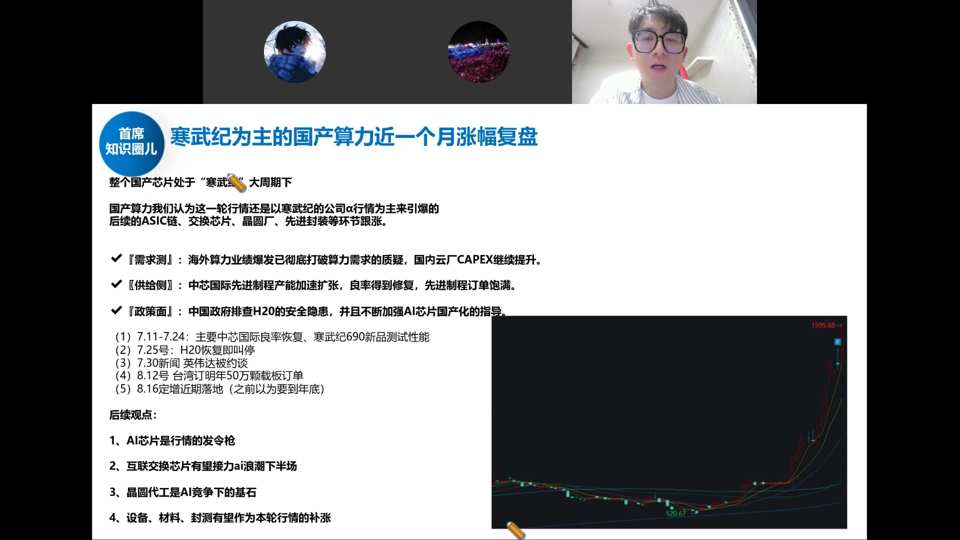
半导体当前最大看点就是国产算力芯片的国产化。寒武纪去年还亏损、今年却冲到 5000–6000 亿市值，本质是把明后年爆发的空间提前打到今年——市场发现了确定性。这轮行情以寒武纪阿尔法行情为主引爆：需求侧（海外算力业绩爆发、国内厂CAPEX提升）+供给侧（中芯良率修复、先进制程订单饱满）+政策面（排查H20安全隐患、指导不买英伟达）三击共振。
选股三要素：① 行业处于上升阶段、空间巨大且有利润空间；② 行业中格局好/定位稀缺/壁垒高的公司；③ 有政策推动。涨得猛的国产算力票，基本都是"大赛道 + 龙头稀缺标的"。
寒武纪的三个变化：① 下一代产品（690/580S）在阿里、字节等大厂验证，评价是"国内最强的卡"；② 中芯解决了供给侧代工，盛合晶微/通富解决封测，需求侧+供给侧形成闭环；③ 政策排查 H20 安全隐患、指导互联网厂商能不买就不买。另有"明年 50 万颗订单"传闻与定增落地。后续观点：AI 芯片是发令枪 → 互联交换芯片接力 AI 浪潮下半场 → 晶圆代工是 AI 竞争基石 → 设备材料封测补涨。
二、现状：H20 被拦，云厂供应链全面转向国产
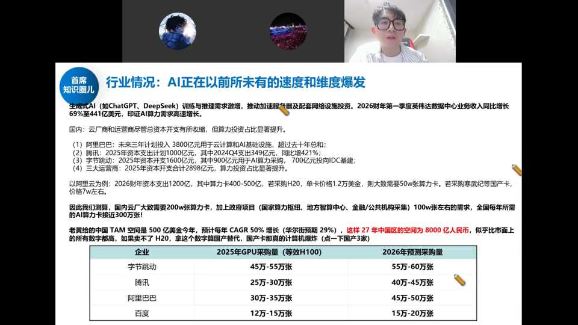
生成式AI（ChatGPT/DeepSeek）训练推理需求激增，2026Q1英伟达数据中心业务收入同比增长69%至441亿美元。国内云厂CAPEX显著提升：阿里三年3800亿、腾讯1000亿（+421%）、字节1600亿、三大运营商2898亿。以阿里为例，2026财年资本支出1200亿，其中算力卡400-500亿，若采购H20单价1.2万美金则需50万张。全国年AI算力卡需求近300万张。老黄给中国区空间今年500亿美金、2027年达8000亿人民币——一旦踢出英伟达，国产算力卡供应链将"爆炸"。
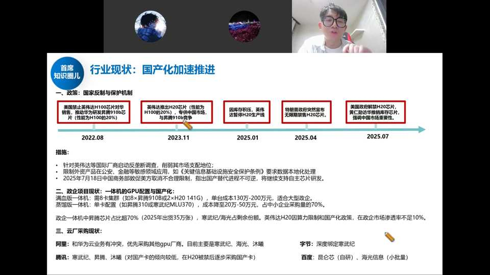
23 年英伟达推阉割版 H20 专为中国市场，本想压制国产；但今年 4 月特朗普无限期禁售 H20，即使后来解禁，本质已不是美国给不给，而是工信部不让国内采购——H20 是阉割版会压制国产生态，且有后门风险。政企采购基本 70% 用华为昇腾，H20 政企渗透率几乎为零。
- 阿里（与华为云有冲突）：优先自己平头哥 → 踢掉英伟达 → 寒武纪 → 海光/沐曦。平头哥新 AI 芯片已在测试，用国内代工（中芯），非台积电。
- 字节：深度绑定寒武纪，无 NV 情况下是最大供应商。
- 腾讯：过去对国产卡保守，现阶段加速采购寒武纪、昇腾、沐曦。
- 百度：自有昆仑芯，小批量海光。
空间测算：阿里 2026 财年约 1200 亿支出、其中 400–500 亿买 AI 算力卡；全国全年可能近 300 万张算力卡。老黄给中国区的空间今年约 500 亿美金、27 年达 8000 亿人民币——一旦把英伟达踢出去，国产算力卡供应链会"爆炸"。
三、国产 AI 芯片产品全景
国内走在最前的三家：华为昇腾、寒武纪思元、海光；阿里平头哥、沐曦、摩尔线程、燧原、天数、壁仞等加速追赶。

- 华为昇腾：910B 之后的 910C 本质是"两个 910B 拼一起"的过渡版（两颗 die 合封），真正质变要看明年 910D。
- 寒武纪思元：690 在中芯流片、送样反馈很好（比华为 910C 还好），是这轮起涨主因；主流思元 590。
- 海光：深算三号，代工大头仍在三星（不受制裁），拿了部分中芯产能。
- 落后者：沐曦、摩尔线程明年 Q1 才在中芯 N+2 流片、Q2 才有结果；燧原、天数同理。壁仞特殊——大股东中兴通讯与华虹关系好，未来可能在华虹拿到产能。
四、供给侧瓶颈：先进制程产能与 CoWoS
国内 AI 芯片最大难题就两个：先进制程晶圆产能 和 CoWoS 封装能力。

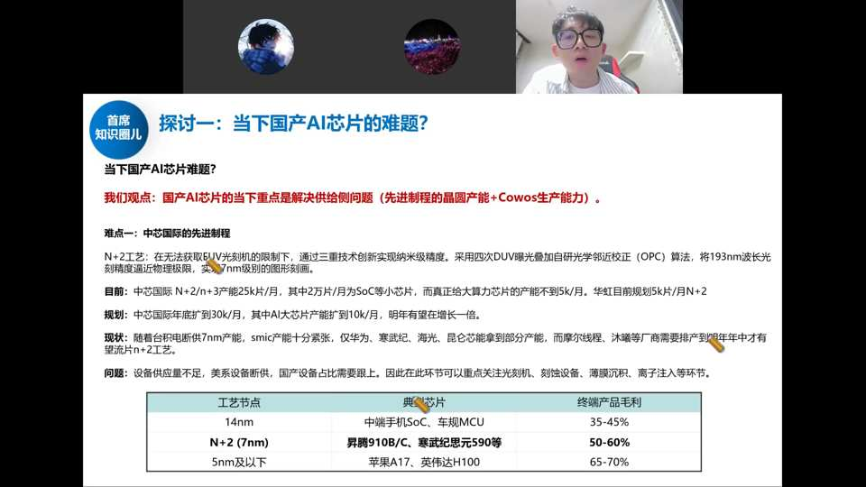
难点一：中芯国际先进制程。N+2 工艺在无法获取 EUV 限制下，通过三重技术创新实现纳米级精度——采用四次 DUV 曝光叠加自研光学邻近校正（OPC）算法，将 193nm 波长光刻精度逼近物理极限。工艺节点毛利：14nm（中端手机SoC/车规MCU）35-45%；N+2/7nm（昇腾910B/C、寒武纪590等）50-60%；5nm及以下（苹果A17、英伟达H100）65-70%。
- 制程：买不到 EUV，只能 DUV 多重曝光逼近等效 7nm（N+2）；曝光次数越多对准误差越大、良率下滑越快。中芯做不大单 die，靠两颗 die 合封堆算力追赶。
- 产能：中芯 N+2 目前约 2.5 万片/月（其中 2 万片是 SoC/麒麟等小芯片），真正给大算力芯片的不到 5000 片/月；规划年底扩到 3 万片/月、AI 大芯片往 1 万片/月扩。华虹（华力微）今年 N+2 目标 1 万片/月，难度不小。
- 良率拐点：Q1 因光刻胶等材料被断供、美系设备撤走无人调试而扩产停滞；现已改用国产材料并自行调试解决，Q3 芯智城订单饱满——供给侧痛点在好转。
- 设备：先进制程约 80% 仍是美系设备，断供后靠库存设备扩产；明年库存用完后，就得看国产设备（刻蚀、薄膜沉积、离子注入、量检测、光刻）能否顶上——这是设备股未来的订单空间。
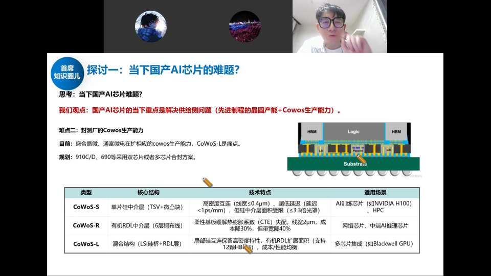
难点二：封测厂 CoWoS 生产能力。盛合晶微、通富微电在扩相应 CoWoS 产能，CoWoS-L 是痛点。CoWoS-S（单片硅中介层 TSV+微凸块）用于 AI 训练芯片如 H100；CoWoS-R（有机 RDL 中介层）用于网络芯片/中端 AI 推理；CoWoS-L（混合结构 LSI 硅桥+RDL）用于多芯片集成如 Blackwell GPU。
CoWoS：把 HBM 与 GPU Logic 合封在基板上，interposer 介质层由中芯做，整封测交给盛合晶微、通富、长电、甬矽。这两家最近猛扩 CoWoS 产能——供给侧两大痛点同时好转，是国产 AI 芯片出现向上拐点的信号。
五、三条主线：算力、存力、运力
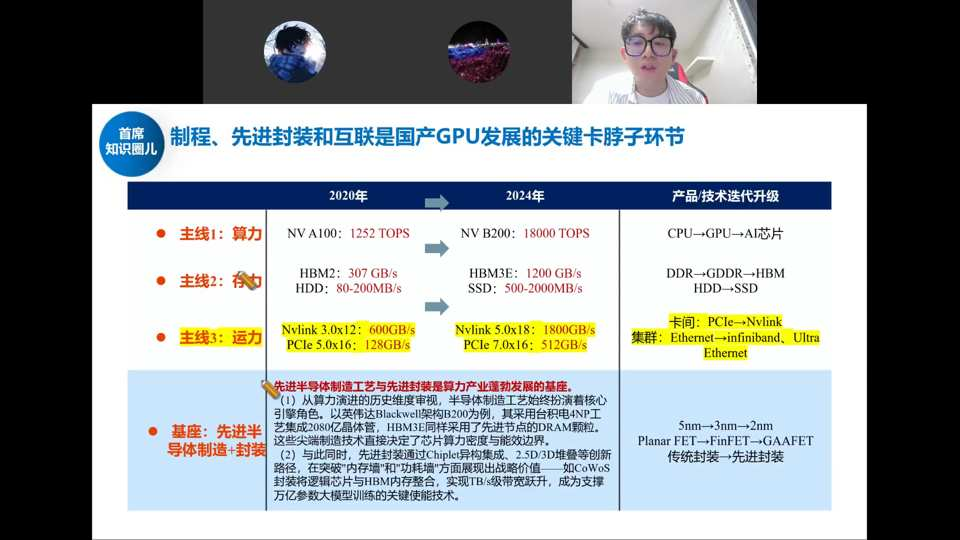
- 算力：GPU/ASIC，从 A100（1252 TOPS）到 B200（18000 TOPS）算力翻十几倍。
- 存力：HBM2（307GB/s）→ HBM3e（1200GB/s）、SSD（80-200MB/s → 500-2000MB/s），存算一体能力加强。
- 运力（新提炼的词）：Nvlink 3.0x12（600GB/s）→ Nvlink 5.0x18（1800GB/s）、PCIe 5.0x16（128GB/s）→ PCIe 7.0x16（512GB/s）。GPU/CPU/存储之间信号传输的速率与效率，即互联交换类芯片。当单卡算力、HBM 到顶后，进一步提升的瓶颈就在互联——华为 384 超节点、64/72 卡集群把大量卡串起来，更要靠运力升级。
底座是半导体制造与封装（传统封装→先进封装），算力这块先进封装主要就是 CoWoS。设备材料、封测会是本轮行情的补涨环节（非前置）。
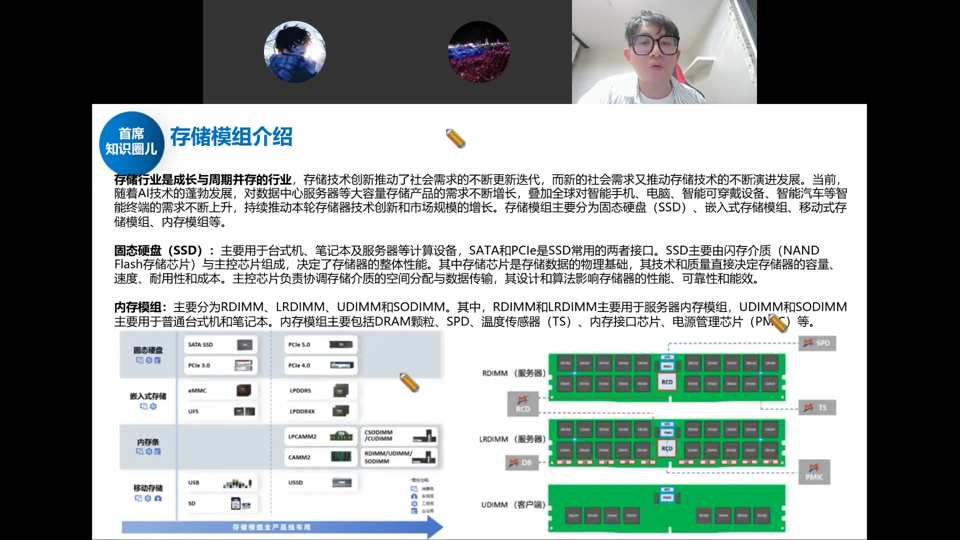
存储行业是成长与周期并存的行业。存储模组主要分固态硬盘（SSD）、嵌入式存储、内存条（RDIMM/LRDIMM/UDIMM/SODIMM）、移动存储。企业级服务器主要用 SSD 和内存模组。SSD 主要由 NAND Flash 颗粒+主控芯片组成，接口以 SATA/PCIe 为主；内存模组主要包括 DRAM 颗粒、SPD、温度传感器、内存接口芯片、电源管理芯片等。存储模组公司本质是采购存储颗粒做组装，不是特别高端的生意，但产业链爆发时收入会高增。
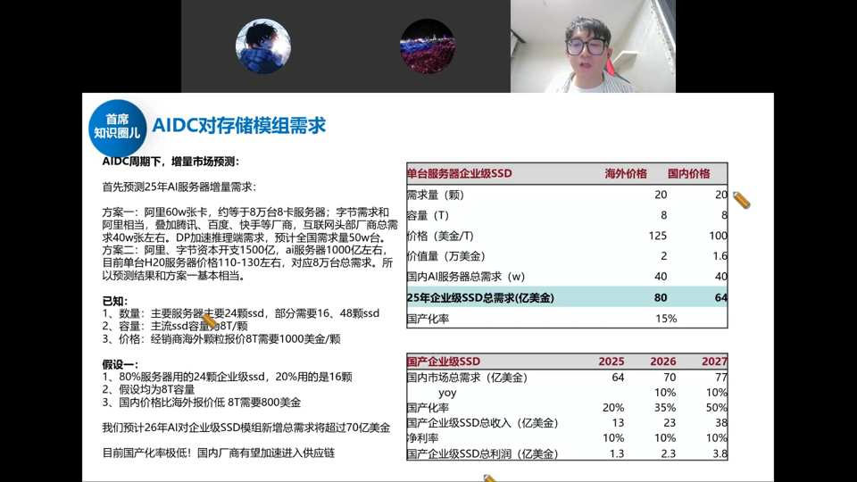
AIDC 周期下增量预测：方案一阿里 60 万张卡（约 8 万台服务器），加上腾讯/百度/快手等互联网头部厂商总需求约 40 万台，全球约 50 万台。已知：主要服务器需 24 颗 SSD（部分 16/48 颗），主流 SSD 容量 8T，价格 800 美金/颗（海外）。预测 2026 年 AI 对企业级 SSD 模组新增总需求超 70 亿美金（约 500 亿人民币）。25 年企业级 SSD 总需求 80 亿美金（海外）/64 亿美金（国内），国产化率仅 15%——国内厂商（江波龙、德明利、佰维存储、香农芯创等）有望加速切入。
六、运力：什么是交换芯片
单张 GPU 无法完成训练，需多张 GPU、多台服务器组集群；大模型数据量极大，数据传输速度成为制约训练速度的瓶颈。传统方案：GPU 互通用 PCIe，服务器之间用以太网 Ethernet。

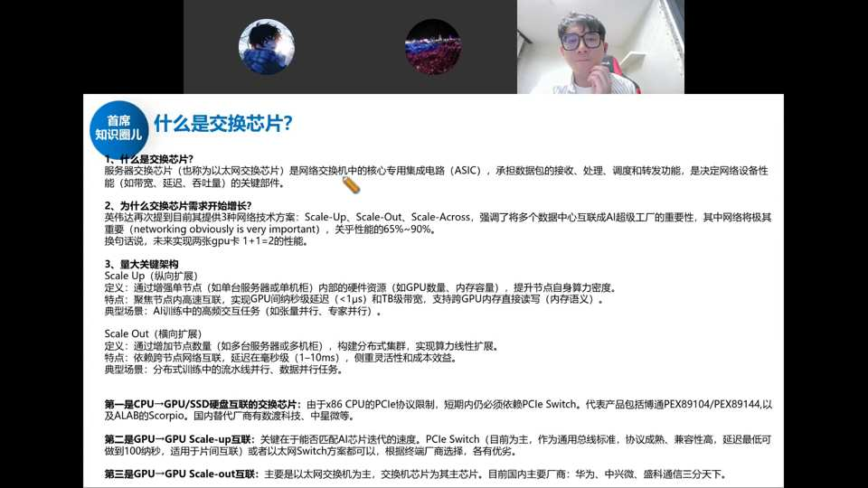
交换芯片（又称以太网交换芯片）是网络交换机中的核心专用集成电路（ASIC），承担数据包的接收、处理、调度和转发，决定网络设备性能。英伟达提出 Scale-Up/Scale-Out/Scale-Across 三种互联技术方案，网络将极其重要，关乎性能的 65%-90%。
- Scale Up（纵向扩展）：通过高速串行节点（如单台服务器/单机柜）内部的硬件资源（GPU 数量、内存容量），聚焦节点内高速互联、实现 GPU 间微秒级延迟（<1μs）和 TB 级带宽。典型场景：AI 训练中的高频交互任务（张量并行、专家并行）。
- Scale Out（横向扩展）：通过增加节点数量（如多台服务器/多机柜），构建分布式集群，实现算力线性扩展。特点：依赖跨节点网络互联，延迟在毫秒级（1-10ms），侧重灵活性和成本效益。典型场景：分布式训练中的流水线并行、数据并行任务。
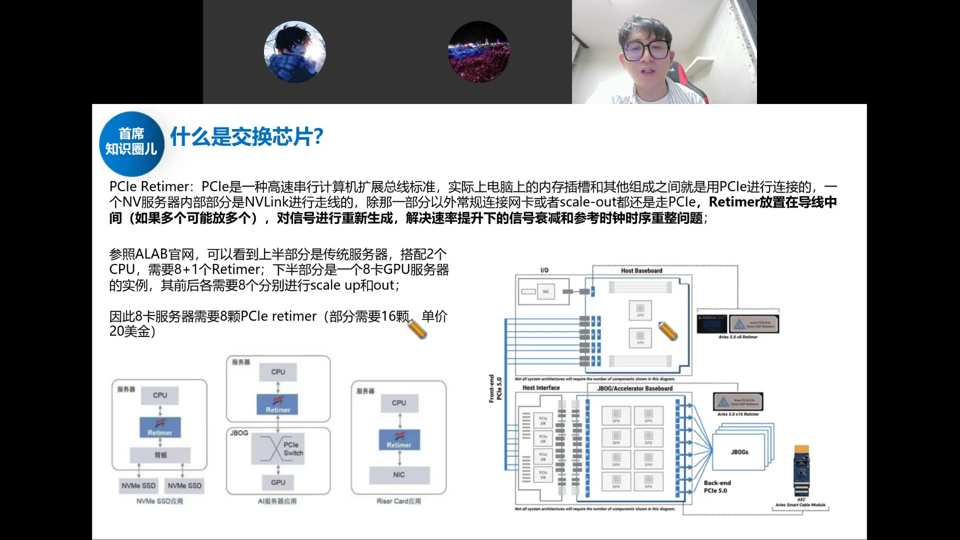
PCIe Retimer：PCIe 是高速串行计算机扩展总线标准，Retimer 放置在导线中间，对信号进行重新生成，解决速率提升下的信号衰减和参考时钟时序重整问题。参照 ALAB 官网：上层是传统服务器（2 CPU + 8+1 Retimer），下层是 8 卡 GPU 服务器（前后各需 8 个 Retimer 分别进行 scale up/out）。因此 8 卡服务器需要 8 颗 PCIe Retimer（部分需 16 颗），单价 20 美金。国内主要是澜起科技做 Retimer，净利率高达 50% 以上。
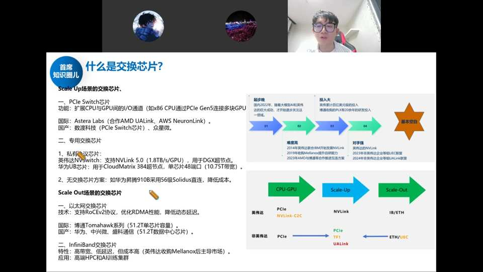
Scale Up 场景交换芯片：① PCIe Switch 芯片（扩展 CPU/GPU 间 I/O 通道），国际 Astera Labs（AMD UALink/AWS NeuronLink），国产数渡科技（万通发展收购）、众硅微；② 专用协议芯片——NV Switch（英伟达 NVLink 5.0，华为 UB Switch/CloudMatrix 384），华为昇腾 910B 采用 56 级 Solidus 直连降低成本。
Scale Out 场景交换芯片：① 以太网交换芯片（博通 Tomahawk 51.2T 单芯片），国际博通，国产华为/中兴微/盛科通信（51.2T 数据中心芯片）；② InfiniBand 芯片（高带宽低延迟，英伟达收购 Mellanox 后主导），应用于高端 HPC 和 AI 训练集群。
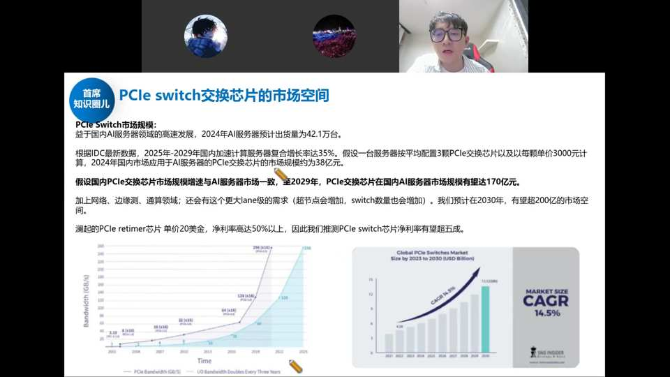
PCIe Switch 市场规模：2024 年 AI 服务器预计出货 42.1 万台，按每台 3 颗 PCIe 交换芯片、单价 3000 元计算，2024 年国内市场约 38 亿元。假设与 AI 服务器市场增速一致，至 2029 年国内市场规模有望达 170 亿元，加上网络侧/边缘侧/通算领域需求，2030 年有望超 200 亿市场空间。澜起 PCIe Retimer 净利率超 50%，推测 PCIe Switch 净利率有望超五成，3-5 年内可形成百亿利润体量市场。
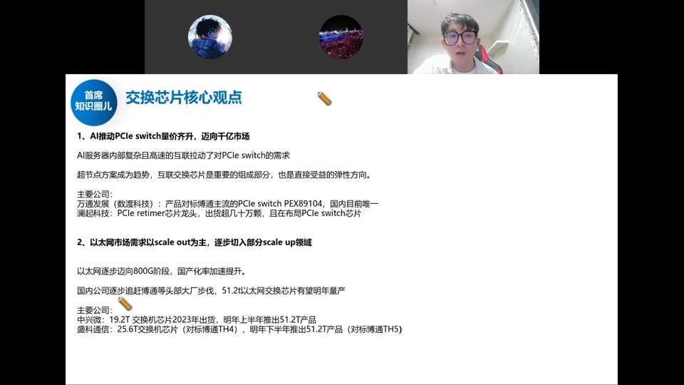
核心观点：① AI 推动 PCIe Switch 量价齐升迈向千亿市场（全球），国内 200-300 亿。超节点方案成趋势，互联交换芯片是最重要组成部分，直接受益弹性方向。主要公司：万通发展（数渡科技，产品对标博通 PEX89104，国内目前唯一）、澜起科技（PCIe Retimer 芯片龙头，出货几十万颗，布局 PCIe Switch）。② 以太网市场需求以 scale out 为主，逐步切入部分 scale up 领域，向 800G 阶段迈进，国产化率加速提升。国内公司逐步追赶博通：中兴微 19.2T 交换机已出货、明年上半年推 51.2T（对标博通两年前产品）；盛科通信 25.6T（对标博通 TH4）、明年下半年推 51.2T（对标博通 TH5）。
- 价值量：博通主流 PCIe Switch（89104）约 1000 美金一颗，最高速率款卖到 2 万美金一颗。没有它，8 卡 GPU 1+1 远小于 8；有了它才能实现 1+1=8。
- 国产：国内主要是盛科（数度被万通发展收购，故万通发展暴涨）、重芯微，多未上市。全球龙头是博通。
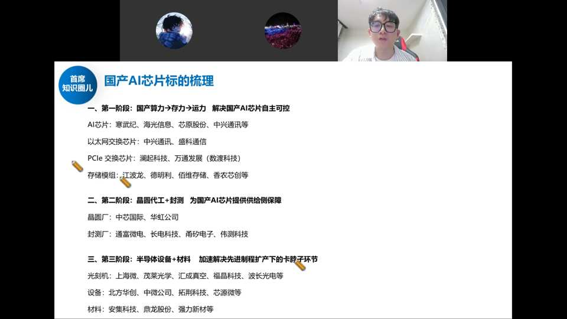
国产 AI 芯片标的梳理（三阶段）：
- 第一阶段：国产算力→存力→运力，解决自主可控：AI 芯片（寒武纪、海光信息、芯原股份、中兴通讯）；以太网交换芯片（中兴通讯、盛科通信）；PCIe 交换芯片（澜起科技、万通发展/数渡科技）；存储模组（江波龙、德明利、佰维存储、香农芯创）。
- 第二阶段：晶圆代工+封测，供给侧保障：晶圆厂（中芯国际、华虹公司）；封测厂（通富微电、长电科技、甬矽电子、伟测科技）。
- 第三阶段：半导体设备+材料，解决先进制程卡脖子：光刻机（上海微电子、茂莱光学、汇成真空、福晶科技、波长光电）；设备（北方华创、中微公司、拓荆科技、芯源微）；材料（安集科技、鼎龙股份、强力新材）。
结论：AI 芯片（寒武纪为主）是发令枪，打开板块空间；后续接力看互联交换（运力）、晶圆代工（中芯/华虹），以及设备材料封测的补涨。核心跟踪两大供给侧痛点——先进制程产能、CoWoS 产能的爬坡进度。